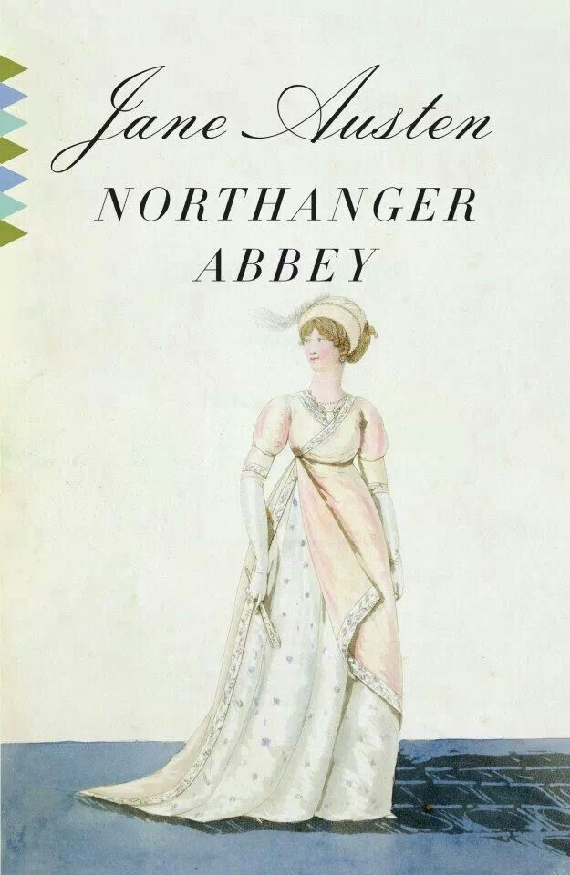

Northanger Abbey (1818)
Synopsis
The story's heroine, seventeen year old Catherine Morland, is invited by her neighbours, the Allens, to accompany them to visit Bath for a number of weeks. While, initially, the excitement of experiencing such a place was dampened by her lack of other acquaintances, she is soon introduced to an intriguing young gentleman named Henry Tilney, though her attention was quickly taken upon meeting a young lady named Isabella Thorpe. Isabella tries to make a match between Catherine and her brother John. John Thorpe continually tries to sabotage her relationship with the Tilneys, which leads to many misunderstandings.
Download PDF